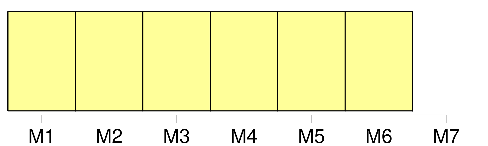
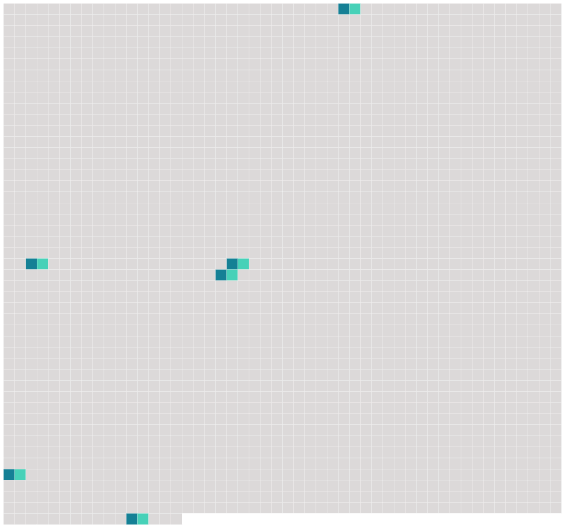

Longueur nb maillons : 6 mentions |
  |
Certes, nous n'avons pas adopté le système du capitaine Nemo ; nous faisons quelques excursions à terre quand cela nous plaît, mais nous préférons la vie dans [la mer] , qui nous est bonne. [44 phrases]
On n'était pas prisonnier à Némoville : chaque sous-marin se détachait facilement des couloirs extérieurs et pouvait seul remonter à la surface de [la mer] , quand il le désirait.
Quelquefois, la ville entière montait à la surface de [la mer] , renouveler sa provision d'air ; et c'était un spectacle bien étrange que de voir surgir de l'eau cette île artificielle, qui pouvait se déplacer à volonté, changer de localité, s'approcher de la côte ou bien replonger au fond de [l'Océan] [40 phrases] Il y avait deux jours que le curé Bernard était à Némoville, quand Roger lui proposa de faire une petite excursion de pêche à la surface de [la mer] [8 phrases]
» |
 |
La ressource peut être téléchargée sur la page Ortolang
Si vous avez des questions ou vous voyez des erreurs, merci d'envoyer un mail à silvia.federzoni89@gmail.com
Site développé par S. Federzoni (contact)